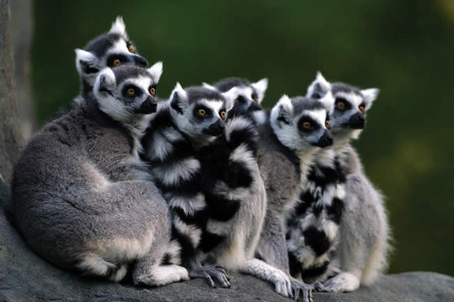

Lemur Lookout & Dragons
Cincinnati Zoo & Botanical Garden · Photo Tour #25


Lemur photo: Cincinnati Zoo & Botanical Garden.
Downhill from World of the Insect, the lookout that began in the 1960s as a baboon home now belongs to the ring-tailed lemurs. I pair it with the Dragons building and its monitor lizards, the way the path does.
Cincinnati is one of only three places to have housed and bred the rare armadillo lizard. Inside you'll also find prehensile skinks, tree monitors, and my favourite indoor Komodo dragon display — the dragons share their space with Timor zebra finches, just as they would at home.
Posted first on Facebook — open the tour there →